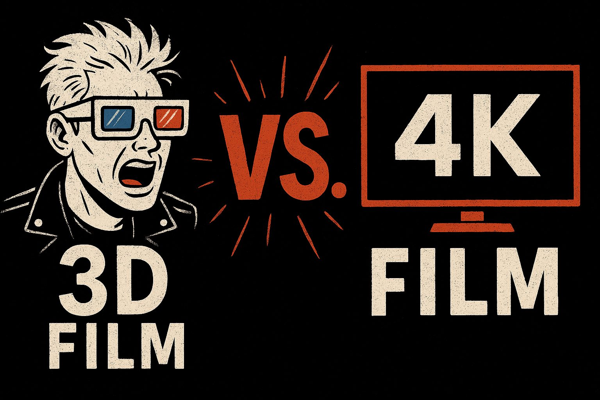
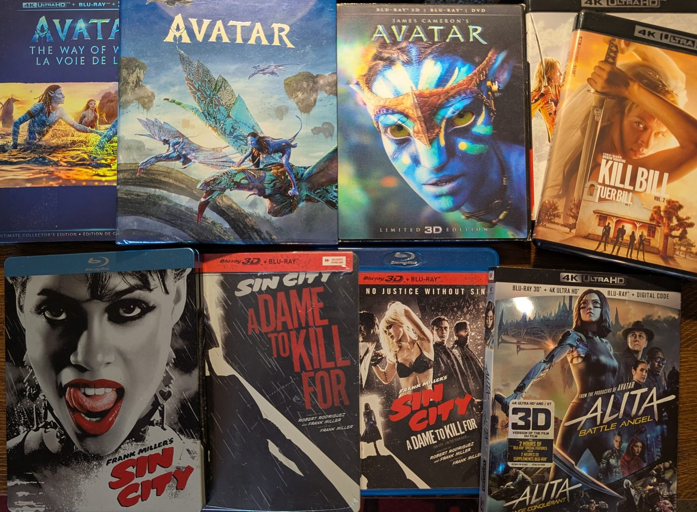

The Great Cinema Format Wars: Why We Lost More Than We Gained
The Evolution and Future of 3D and 4K in Film

The film industry has spent the last decade locked in what I call the “format wars”—a false battle between 3D immersion and 4K resolution that has left both filmmakers and audiences shortchanged. As someone who owns nearly every version of classics like Kill Bill, Sin City, and Avatar across multiple formats, I’ve witnessed firsthand how the industry abandoned promising storytelling tools in favor of technical specifications that don’t always serve the art.
The Kill Bill Success Story: When 4K Gets It Right
Let’s start with a genuine success story. Kill Bill: Volume 1 and Volume 2 finally arrived on 4K Ultra HD Blu-ray in January 2025, courtesy of Lionsgate, and these releases showcase everything that works about modern remastering. Shot on 35mm film, Tarantino’s masterpiece had the source material to truly benefit from 4K scanning and HDR grading.
When you experience these releases on a proper setup—65”+ OLED display, 4K player, full Dolby Vision and Atmos—the improvement is remarkable. The grain structure, color saturation, and detail retrieval demonstrate why film-to-4K transfers can be transformative. However, some fans have criticized the transfers for only marginal improvements, and the long-promised combined cut, The Whole Bloody Affair, remains unreleased, possibly because Tarantino retains rights to that version.
Still, this represents 4K remastering at its best: taking excellent source material and presenting it at its technical peak. But here’s the thing—Kill Bill was never intended for dimensional viewing, making this a straightforward case of technical enhancement rather than artistic interpretation.
The Sin City Paradox: When Format Wars Leave Classics Behind
Then we have the Sin City franchise, which tells a more complex story about format evolution. The original 2005 Sin City remains absent from the 4K catalog, shot digitally at 1080p with Rodriguez focusing entirely on translating Frank Miller’s comic book aesthetic using groundbreaking digital techniques—not 3D.
While Sin City was shot digitally using cutting-edge Sony HDC-F950 cameras in 4:4:4 RGB format—actually high-quality source material that could probably benefit from 4K remastering—I can only assume studios weigh production costs against projected sales, and maybe Sin City’s cult status does not promise the same returns as other mainstream blockbusters.
However, the 2014 sequel Sin City: A Dame to Kill For was specifically shot in native 3D using advanced stereo camera rigs, and its 3D Blu-ray release demonstrates Rodriguez’s later embrace of dimensional storytelling. The sequel’s layered noir environments and spatial character interactions showcase what the director learned about using 3D as a narrative tool, but this evolution came too late—by 2014, the home 3D market was already collapsing.
What We Actually Lost When 3D TVs Vanished
The death of 3D TVs wasn’t just about consumer adoption—it was about the industry abandoning an entire storytelling medium. Samsung led the retreat, discontinuing 3D support in 2016, followed by LG and Sony in 2017. The reasons were numerous: active shutter glasses were bulky and needed charging, while passive ones were less intrusive but still annoying. Viewers reported eye strain and headaches, deterring casual use. The lack of 3D content created a chicken-and-egg problem: without programming, consumers wouldn’t buy the TVs; without an audience, networks wouldn’t produce content.
But the real issue was that manufacturers like LG and Sony treated 3D as a technical gimmick rather than a creative tool. They focused on the spectacle rather than the storytelling possibilities. When 4K TVs arrived, offering crisp visuals without glasses, the industry abandoned 3D entirely rather than developing both technologies simultaneously.
Having experienced proper 3D content at home, this loss feels profound. Films designed for dimensional viewing now exist in creative limbo, reduced to flat presentations regardless of director intent.
Avatar: The Gold Standard That Everyone Ignored
Cameron’s Avatar films demonstrate exactly how to approach this correctly, and the industry mostly ignored the lesson. I own both the 3D and 4K versions of these films, and they serve completely different purposes—which is exactly the point.
The 4K versions excel in technical presentation. The detail, HDR capabilities, and Dolby Atmos create an impressive home theater experience that showcases modern display technology. But the 3D versions preserve Cameron’s original vision of immersive environmental storytelling. Pandora feels like a place you could walk into in 3D, while the 4K version, for all its technical excellence, presents it as a beautiful but fundamentally flat image.
Cameron remains committed to 3D as a narrative tool, with Avatar: The Way of Water and future sequels designed to push the format further. Similarly, Robert Rodriguez used 3D in Alita: Battle Angel not as spectacle but as storytelling enhancement. Yet industry enthusiasm has waned dramatically—only nine 3D films were released in North America in 2021.
The Format Wars Fallacy
Here’s what the industry got wrong: they framed this as 3D versus 4K, but that’s a false choice. My collection proves these technologies complement rather than compete with each other. 4K excels for films shot on high-quality source material (like Kill Bill from 35mm), while 3D preserves specific artistic visions that depend on spatial storytelling (like Sin City and Avatar).
The real missed opportunity was not developing both technologies simultaneously. The rise of 4K TVs overshadowed 3D completely, leaving films like Sin City in a format no-man’s land.
Imagine if we’d developed 4K 3D displays that eliminated glasses—we’d have the technical precision of modern displays with the dimensional storytelling capabilities directors envisioned.
The Streaming Problem and Content Desert
The dominance of streaming platforms like Netflix, which rarely support 3D content, has essentially killed home 3D distribution. Even films specifically designed for dimensional viewing get flattened for streaming consumption. This creates a fundamental disconnect between artistic intent and audience experience.
Meanwhile, the 4K trend prioritizes films with broad appeal or guaranteed sales—Star Wars, The Lord of the Rings, superhero franchises. Niche or stylistically unique films face delays as studios balance costs with market potential. Tarantino’s hands-on approach ensured Kill Bill’s 4K release, but without similar advocacy, films like Sin City await their turn indefinitely.
The 8K 3D Dream: Technically Possible, Commercially Impossible
The concept of 8K 3D movies represents the ultimate fusion: ultra-high resolution combined with immersive depth. Technically, it’s achievable—Cameron’s team could certainly produce such content. But 8K adoption remains slow, with few consumer TVs supporting it and production costs that are prohibitive for all but the most ambitious projects.
8K 3D would require specialized cameras, extensive post-production, and display technology that barely exists in consumer markets. While companies like Sony experiment with autostereoscopic displays, we’re likely years away from practical implementation outside experimental or ultra-high-budget productions.
Looking Forward: The Glasses-Free Horizon
The future probably belongs to glasses-free 3D displays. Sony’s Spatial Reality Displays and similar autostereoscopic technologies hint at this possibility. When that barrier disappears, all the 3D content that’s been sidelined suddenly becomes relevant again. Virtual and augmented reality platforms, which rely on 3D visuals, might inspire new content creation, though these are better suited to interactive experiences than traditional films.
Until then, we’re stuck with an incomplete ecosystem where technical excellence and artistic completeness exist in separate domains.

The Collector's Lament
Owning these films across multiple formats has taught me that each version serves a purpose, but we shouldn’t have to choose. The Kill Bill 4K releases showcase technical remastering at its finest. The Sin City: A Dame to Kill For 3D version preserves Rodriguez’s later embrace of spatial noir storytelling. The Avatar collection demonstrates why we need both approaches simultaneously.
3D may survive in premium formats like IMAX or theme park attractions, where immersion justifies the complexity. Passionate filmmakers like Cameron will keep it alive in high-profile projects, but widespread adoption depends on technological breakthroughs that eliminate glasses and reduce costs.
Beyond the Wars: What Cinema Actually Needs
The real lesson isn’t about picking sides in format wars—it’s about giving directors tools to tell stories in whatever dimensions they choose. Great filmmaking transcends format limitations, but it also deserves to be experienced as intended.
The industry’s future shouldn’t be about 3D versus 4K versus 8K. It should be about creating flexible, accessible technologies that serve artistic vision rather than forcing artists to choose between technical specifications and creative intent.
Until we solve the glasses-free 3D puzzle and develop cost-effective production workflows, we’re essentially choosing between pristine image quality and dimensional storytelling. Both have their place, and both deserve better than the format wars that have defined the last decade.
For now, treasures like Kill Bill in 4K prove the past can find new life, while the Sin City franchise reminds us what happens when technology shifts faster than artistic vision can adapt. The future of cinema depends on learning from both lessons.